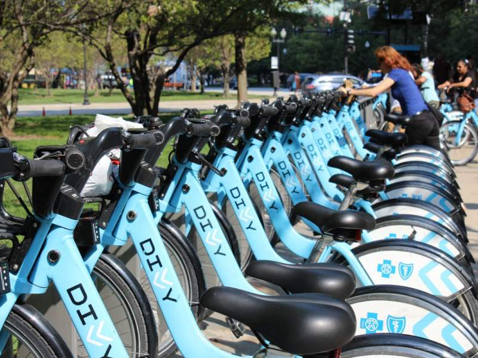

Quantifying Social Polarization
with NLP language models.
For my research project at Norhteastern Illinois University, I decided to work on analyzing and measuring controversial and polarized topics that are highly prevalent on social media platforms. I scrapped twitter using hashtags and collected data to be used by language models, such as BeRT, to perform stance detection. Further statistical analysis of the stance/belief distribution were performed to output a single metric.

Google Data Analytics Capstone Project

I completed the Googles Data Analyst professional certification analyzing a bike-share company in Chicago and discovering meaninful and actionable insights from the data.
Covid-19 Global Infections Analysis

Obtaining data from the World Health Organization(WHO), I cleaned and queried the data to obtain useful results and built a visually appealing dashboard utilizing Tableau.
Github repo: Source Code
Using flight information to build a model that can predict the price of a flight, data was obtained from Kaggle.

The goal of this project was to build a machine learning model that can perform breast cancer detection. It was trained on a dataset that included various properties and measurements of tumors.
Deep learning - House prediction

In this project, I built a deep learning neural network model using tensorflow and keras api to predict the house price based on various house attribute values.
Deep Learning - Clothing Image Recognition

In this project I built a deep learning model to be able to classify images of clothing in a particular broad category of apparel.
Machine Learning Penguin Species Predictor

Predict penguin species using a random forest classifier model. Friendly user interface to input features.
NBA Players Statistics - Web Scraping Project Python

Develop a user-interface with Streamlit, scrape the web for NBA players stats and perform descriptive and graphical analysis using seaborn and pandas.